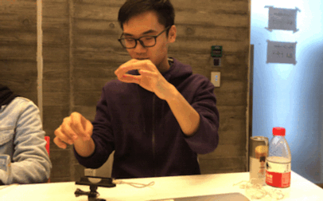
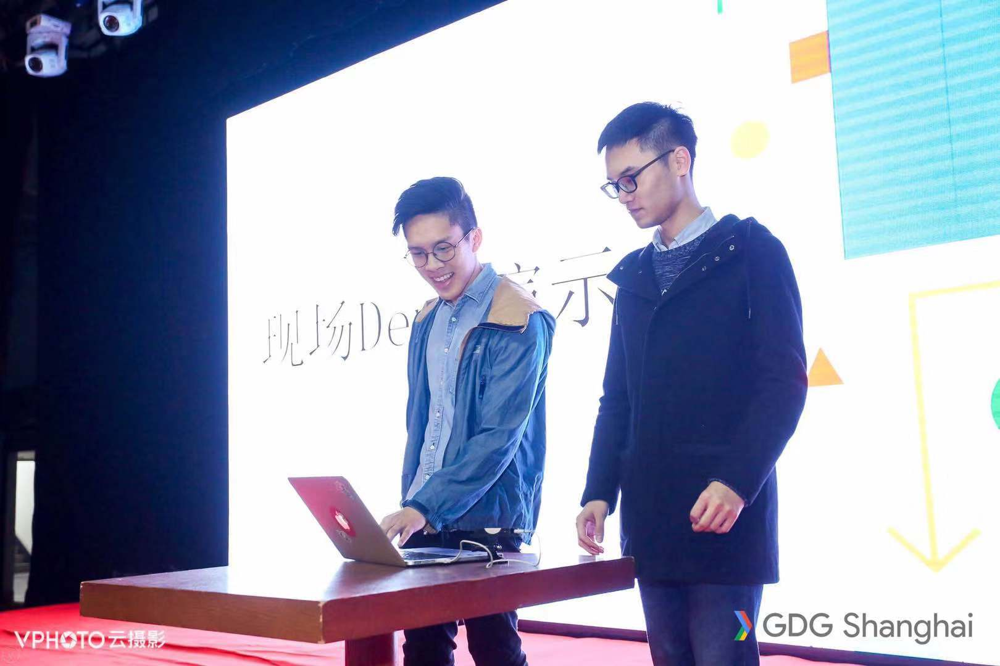

Therem{AI}n
├── AI -> Google Magenta / Neural Network
└── Audio -> MIDI Generation / Theremin Synthesis
• AI-human musical collaboration
• Gesture-based digital theremin
• Real-time melody generation

Hand gesture control with LeapMotion
What this project was aiming to do was to create a machine learning + human musician relationship using a normally unconventional instrument, the theremin. What we wanted to do was create a digital theremin using a LeapMotion for hand detection and tracking, mainly for the ease of input and a lack of tools/resources for creating an actual theremin (but that's potentially on the to-do list), and then input it as MIDI into a pretrained neural network using Google Magenta.

System setup: AI-powered musical response
The user simply waves their hands above the LeapMotion, and after they stop playing the neural network generates a melody to be played back to them with the tone and style of a theremin.